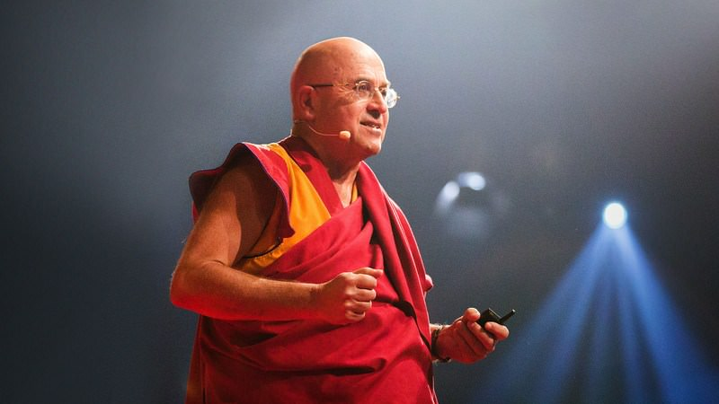
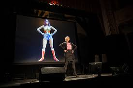
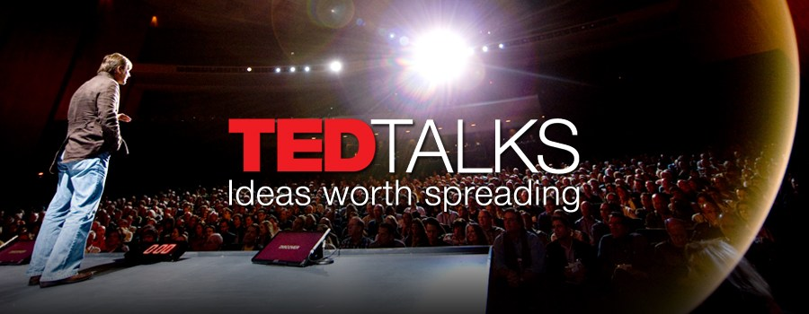
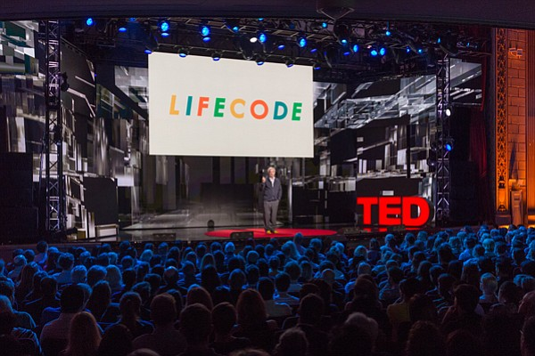
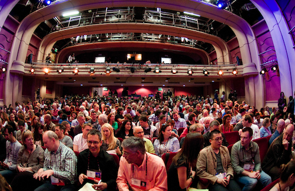
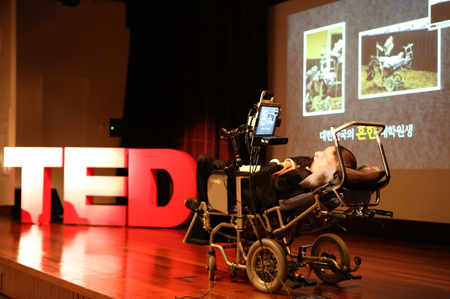

The Organization
Ted ,also know as Ted-talk, is a nonprofit organization devoted to spreading ideas around the world. Ted broadcasts and have people come in to watch people talking about powerful and interesting topics. These talks show powerful ideas and a deeper understanding of the world. This organization believes the can change the world with all these ideas by changing peoples views of these ideas. They want to make great ideas available and spark ideas.
Programs and Initiatives
There are many different programs and ways you can be apart of TED. These include TEDtalks, TED.com,TEDx,TED conferences, TED fellows program, TED translators, TED books, TED on screen, TED-ed, TED prize, TED institute, TED partnerships, Distribution, TED talks education,TED residency, and Ted podcasts. All of these are great ways to get involved. Like with TEDx program you can bring TED talks to your local community.
    
TED Talks
Some amazing Ted talks have happened over time with amazing speakers. One amazing TED talk was when Simon Sinek talked about how great leaders inspire action. Another amazing talk was when model Cameron Russel talked about how looks aren't everything. There are also talks about how to spot a liar, how to make stress your friend, the danger of a single story, secrets of success, and over 2700 more.
Some famous people have even given TED talks. They are Bill Clinton, Bono, Stephen Hawkings, Herbie Hancock,Amanda Palmer, Bill Gates, Jane Goodall, and Sting. All these famous people and many more amazing talks have happened through Ted.